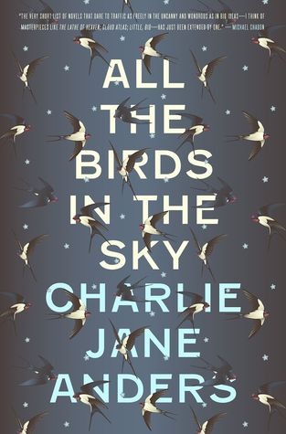

All The Birds In The Sky

Childhood friends Patricia Delfine and Laurence Armstead didn't expect to see each other again, after parting ways under mysterious circumstances during high school. After all, the development of magical powers and the invention of a two-second time machine could hardly fail to alarm one's peers and families.
But now they're both adults, living in the hipster mecca San Francisco, and the planet is falling apart around them. Laurence is an engineering genius who's working with a group that aims to avert catastrophic breakdown through technological intervention into the changing global climate. Patricia is a graduate of Eltisley Maze, the hidden academy for the world's magically gifted, and works with a small band of other magicians to secretly repair the world's ever-growing ailments. Little do they realize that something bigger than either of them, something begun years ago in their youth, is determined to bring them together--to either save the world, or plunge it into a new dark ages.
A deeply magical, darkly funny examination of life, love, and the apocalypse
Home Page